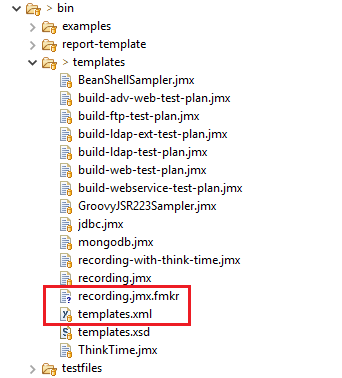
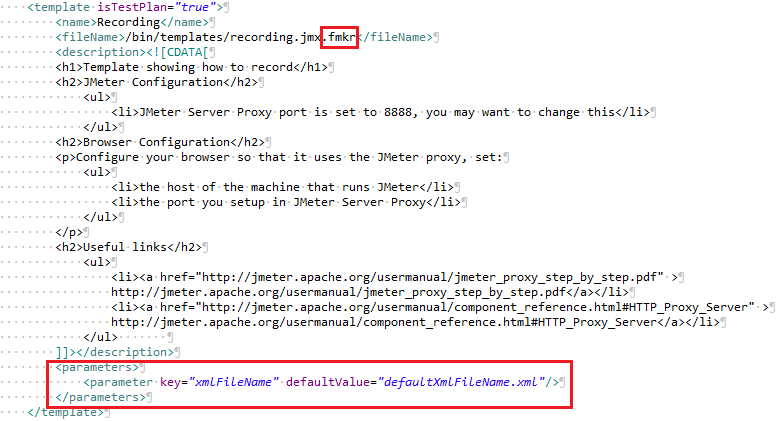

|
Customizable template
|
This document describes how to create a customizable template.
|
1 Folder structure
|
The template feature uses the bin/templates folder which contains :
- templates.xml, the file where you declare the templates you want to be able to use
- some .jmx and .jmx.fmkr files which are the templates
Here is how it looks like:

Figure 1 - template folder |
|
|
|
2 Template declaration
|
|
2.1 Basic template declaration
|
First of all you must declare your template. To do that, look into the templates.xml file.
This file respect a DTD
Below is the already existing Recording template declaration inside the templates.xml :

Figure 2 - recording template declaration |
A template declaration is made as follow :
- template element which contains the information described in the following tags
- name element which contains the template name the user will see
- fileName element which contains the relative path of the template.
- description element which uses html to describe the template
- optional parameters tag (will be discussed later)
|
|
|
2.2 Customizable template declaration
|
Let's say we want the exact same Recording template as in the 2.1 section, but we want to choose the name
of the xml file where the recording of view result tree will be saved.
To do so we will use the parameters tag to tell JMeter to ask the user about a name for the concerned file :

Figure 3 - recording template with parameters |
| You can put as many parameter tags as you want in the parameters tag. |
Let's see what changed here.
Firstly, customs templates are .jmx.fmkr files and not only .jmx.
Lastly, we added a parameters tag.
As you can see in the image, a parameters tag contains parameter tags.
Parameter tags are empty and contains 2 attributes :
- key is the name of the parameter you will ask the user to fill.
- defaultValue is as its name says, the default value the user will see for the parameter.
|
|
|
|
|
|
|